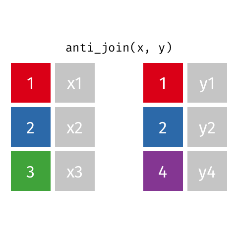

# A tibble: 10 × 2
name profession
<chr> <chr>
1 Ada Lovelace Mathematician
2 Marie Curie Physicist and Chemist
3 Janaki Ammal Botanist
4 Chien-Shiung Wu Physicist
5 Katherine Johnson Mathematician
6 Rosalind Franklin Chemist
7 Vera Rubin Astronomer
8 Gladys West Mathematician
9 Flossie Wong-Staal Virologist and Molecular Biologist
10 Jennifer Doudna Biochemist Merging/Joining Multiple Datasets
Data
Data: Women in science
Information on 10 women in science who changed the world
Inputs
# A tibble: 8 × 3
name birth_year death_year
<chr> <dbl> <dbl>
1 Janaki Ammal 1897 1984
2 Chien-Shiung Wu 1912 1997
3 Katherine Johnson 1918 2020
4 Rosalind Franklin 1920 1958
5 Vera Rubin 1928 2016
6 Gladys West 1930 NA
7 Flossie Wong-Staal 1947 NA
8 Jennifer Doudna 1964 NA# A tibble: 9 × 2
name known_for
<chr> <chr>
1 Ada Lovelace first computer algorithm
2 Marie Curie theory of radioactivity, discovery of elements…
3 Janaki Ammal hybrid species, biodiversity protection
4 Chien-Shiung Wu confim and refine theory of radioactive beta de…
5 Katherine Johnson calculations of orbital mechanics critical to s…
6 Vera Rubin existence of dark matter
7 Gladys West mathematical modeling of the shape of the Earth…
8 Flossie Wong-Staal first scientist to clone HIV and create a map o…
9 Jennifer Doudna one of the primary developers of CRISPR, a grou…Source: Discover Magazine
Desired output
# A tibble: 10 × 5
name profession birth_year death_year known_for
<chr> <chr> <dbl> <dbl> <chr>
1 Ada Lovelace Mathematician NA NA first co…
2 Marie Curie Physicist and … NA NA theory o…
3 Janaki Ammal Botanist 1897 1984 hybrid s…
4 Chien-Shiung Wu Physicist 1912 1997 confim a…
5 Katherine Johnson Mathematician 1918 2020 calculat…
6 Rosalind Franklin Chemist 1920 1958 <NA>
7 Vera Rubin Astronomer 1928 2016 existenc…
8 Gladys West Mathematician 1930 NA mathemat…
9 Flossie Wong-Staal Virologist and… 1947 NA first sc…
10 Jennifer Doudna Biochemist 1964 NA one of t…Inputs, reminder
Joining data frames
Joining data frames
left_join(): all rows from xright_join(): all rows from yfull_join(): all rows from both x and ysemi_join(): all rows from x where there are matching values in y, keeping just columns from xinner_join(): all rows from x where there are matching values in y, return all combination of multiple matches in the case of multiple matchesanti_join(): return all rows from x where there are not matching values in y, never duplicate rows of x- …
Setup
For the next few slides…
# A tibble: 3 × 2
id value_x
<dbl> <chr>
1 1 x1
2 2 x2
3 3 x3 # A tibble: 3 × 2
id value_y
<dbl> <chr>
1 1 y1
2 2 y2
3 4 y4 left_join()

left_join()
# A tibble: 10 × 4
name profession birth_year death_year
<chr> <chr> <dbl> <dbl>
1 Ada Lovelace Mathematician NA NA
2 Marie Curie Physicist and Chemist NA NA
3 Janaki Ammal Botanist 1897 1984
4 Chien-Shiung Wu Physicist 1912 1997
5 Katherine Johnson Mathematician 1918 2020
6 Rosalind Franklin Chemist 1920 1958
7 Vera Rubin Astronomer 1928 2016
8 Gladys West Mathematician 1930 NA
9 Flossie Wong-Staal Virologist and Molecular… 1947 NA
10 Jennifer Doudna Biochemist 1964 NAright_join()

right_join()
# A tibble: 8 × 4
name profession birth_year death_year
<chr> <chr> <dbl> <dbl>
1 Janaki Ammal Botanist 1897 1984
2 Chien-Shiung Wu Physicist 1912 1997
3 Katherine Johnson Mathematician 1918 2020
4 Rosalind Franklin Chemist 1920 1958
5 Vera Rubin Astronomer 1928 2016
6 Gladys West Mathematician 1930 NA
7 Flossie Wong-Staal Virologist and Molecular … 1947 NA
8 Jennifer Doudna Biochemist 1964 NAfull_join()

full_join()
# A tibble: 10 × 4
name birth_year death_year known_for
<chr> <dbl> <dbl> <chr>
1 Janaki Ammal 1897 1984 hybrid species, biodiver…
2 Chien-Shiung Wu 1912 1997 confim and refine theory…
3 Katherine Johnson 1918 2020 calculations of orbital …
4 Rosalind Franklin 1920 1958 <NA>
5 Vera Rubin 1928 2016 existence of dark matter
6 Gladys West 1930 NA mathematical modeling of…
7 Flossie Wong-Staal 1947 NA first scientist to clone…
8 Jennifer Doudna 1964 NA one of the primary devel…
9 Ada Lovelace NA NA first computer algorithm
10 Marie Curie NA NA theory of radioactivity,…inner_join()

inner_join()
# A tibble: 7 × 4
name birth_year death_year known_for
<chr> <dbl> <dbl> <chr>
1 Janaki Ammal 1897 1984 hybrid species, biodivers…
2 Chien-Shiung Wu 1912 1997 confim and refine theory …
3 Katherine Johnson 1918 2020 calculations of orbital m…
4 Vera Rubin 1928 2016 existence of dark matter
5 Gladys West 1930 NA mathematical modeling of …
6 Flossie Wong-Staal 1947 NA first scientist to clone …
7 Jennifer Doudna 1964 NA one of the primary develo…semi_join()

semi_join()
anti_join()

anti_join()
💡Tip!
Order of the datasets matters when you join anti_join(x, y) is different from anti_join(y, x)
Putting it altogether
# A tibble: 10 × 5
name profession birth_year death_year known_for
<chr> <chr> <dbl> <dbl> <chr>
1 Ada Lovelace Mathematician NA NA first co…
2 Marie Curie Physicist and … NA NA theory o…
3 Janaki Ammal Botanist 1897 1984 hybrid s…
4 Chien-Shiung Wu Physicist 1912 1997 confim a…
5 Katherine Johnson Mathematician 1918 2020 calculat…
6 Rosalind Franklin Chemist 1920 1958 <NA>
7 Vera Rubin Astronomer 1928 2016 existenc…
8 Gladys West Mathematician 1930 NA mathemat…
9 Flossie Wong-Staal Virologist and… 1947 NA first sc…
10 Jennifer Doudna Biochemist 1964 NA one of t…Putting it altogether - better syntax
# A tibble: 10 × 5
name profession birth_year death_year known_for
<chr> <chr> <dbl> <dbl> <chr>
1 Ada Lovelace Mathematician NA NA first co…
2 Marie Curie Physicist and … NA NA theory o…
3 Janaki Ammal Botanist 1897 1984 hybrid s…
4 Chien-Shiung Wu Physicist 1912 1997 confim a…
5 Katherine Johnson Mathematician 1918 2020 calculat…
6 Rosalind Franklin Chemist 1920 1958 <NA>
7 Vera Rubin Astronomer 1928 2016 existenc…
8 Gladys West Mathematician 1930 NA mathemat…
9 Flossie Wong-Staal Virologist and… 1947 NA first sc…
10 Jennifer Doudna Biochemist 1964 NA one of t…Joining on multiple variables
Set-up for multiple variables join
Left and right joins with multiple variables
Full and inner joins with multiple variables
Semi and anti joins with multiple variables
Your turn:
Join data
✋ if you have questions or need help
when you are finished
15:00